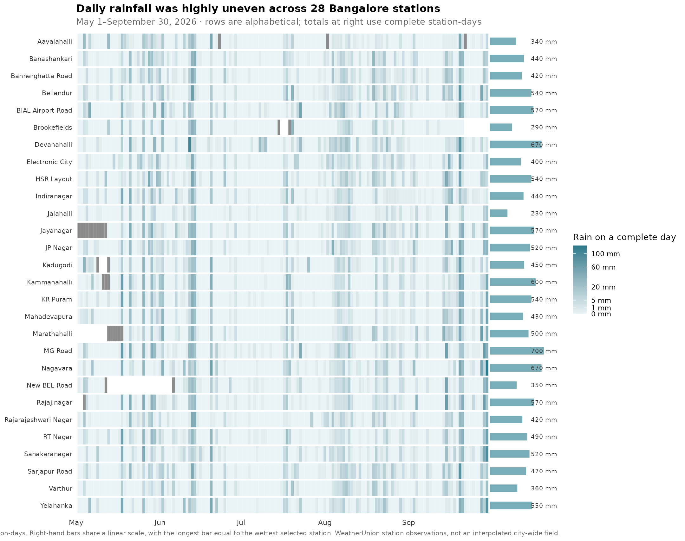

Daily rainfall from 28 WeatherUnion stations shows a city whose wettest and driest parts can be hundreds of millimetres apart.
This post is AI-written.
When people say that Bangalore had a wet monsoon, they usually mean one number. But rainfall is measured at points, and the points do not tell the same story.
I looked at daily rainfall from 1 May through 30 September 2026 across WeatherUnion stations in Bangalore. The first instinct was to draw one line per locality. That produces a difficult chart: most days are dry, and when rain arrives the lines overlap into a tangle.
A heatmap is a better fit. Each row is a locality and each column is a day. Pale cells are dry days, darker cells are wetter days, and the bars at the right show the total rainfall over the full period.

The rows are alphabetical rather than ranked. That makes the chart usable as a lookup: find a locality, then follow its rainfall pattern across the season. The bar at the right supplies the comparison without forcing the reader to decode a second ranking chart.
The totals are far apart
MG Road was the wettest selected station, with about 702 mm over the period. Jalahalli was the driest, with about 230 mm. The difference is roughly 472 mm, and the wettest station received a little more than three times the rainfall of the driest.
That is a large difference for locations within the same city. It also is not simply a case of one area receiving a little more rain on every day. The heatmap shows bursts: some dates are dark across much of the network, while others are dark in only a few rows.
A city average would hide both parts of the story. It would smooth away the event days that mattered locally and conceal the distance between the wettest and driest station totals.
The rain arrived in patches
The most useful feature of the chart is probably not the final ranking. It is the pattern of dark cells running across the rows.
Some rain events were broad, reaching many stations on the same date. Others were much more local, with heavy cells appearing in only a few places. This is why a single Bangalore rainfall number can be technically correct and still be a poor description of what residents experienced.
The chart also avoids a common mistake: incomplete station-days are shown as grey, not as dry. Missing rainfall observations should not be converted into zero rainfall merely because zero is convenient to plot.
What this does — and does not — show
The main comparison includes 28 of the 31 localities with data in the requested window. I kept stations with at least 120 complete rain-days so that a short or incomplete record would not be mistaken for a genuinely dry season.
The values are station observations. A reading from MG Road describes that station, not every street around it. The chart does not interpolate between sensors, and the station totals should not be added together to create a city total.
This is therefore a description of spatial variation in the WeatherUnion network, not a rainfall map for every square kilometre of Bangalore. It is also a single season: the wettest and driest locations could change with storm tracks in another year.
The useful question is local
The interesting question is not simply “How much rain did Bangalore get?” It is: which station, over what period, using which definition of rainfall?
For this five-month window, the answer is clear enough. Bangalore did not experience one uniform rainfall season. It experienced a set of local rainfall histories, sometimes aligned across the city and sometimes sharply different.
The next step would be to repeat this comparison across several years and many more rain events. That would help separate persistent local differences from the geography of individual storms.
Source: WeatherUnion hourly archive snapshot, aggregated to daily rainfall for 1 May–30 September 2026. The comparison uses 28 stations with at least 120 complete rain-days; incomplete station-days are shown as grey. Rainfall values are station observations, not an interpolated city-wide field.
Original question
I want to do some analysis of how rain varies in different parts of Bangalore. Let us use this year's daily rainfall in different parts of Bangalore. Maybe we will go from May 1st until September 30th we have data in weather union for some 30 different localities in Bangalore. So perhaps a graph with all of them, maybe one panel with some 25 different lines showing how rainfall has varied. Figure out the right chart form and do some analysis for publishing on the cloud.